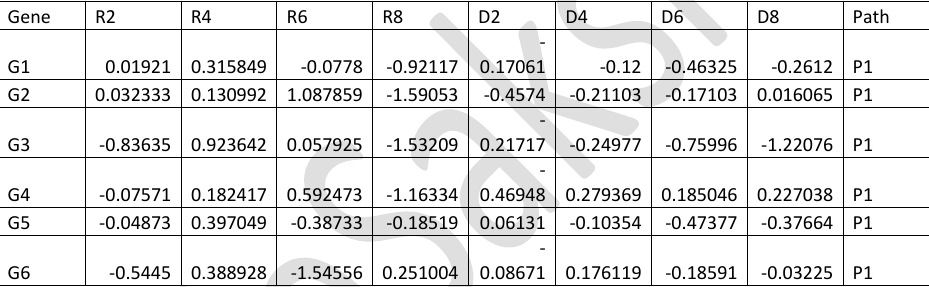
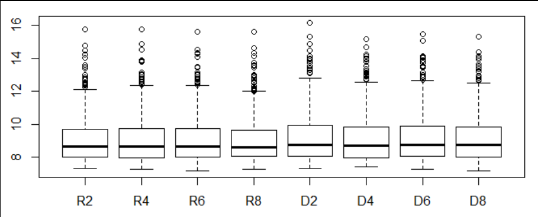
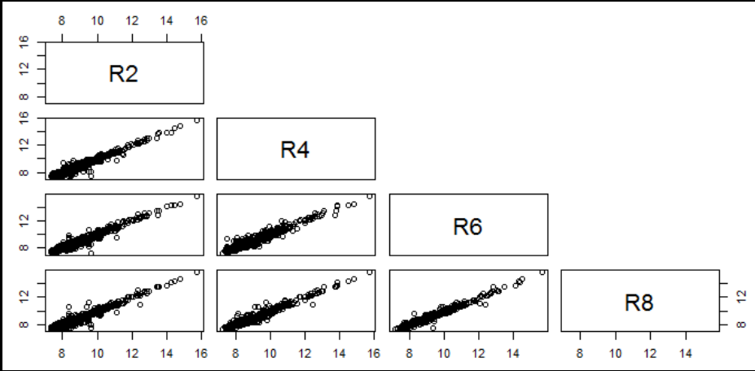
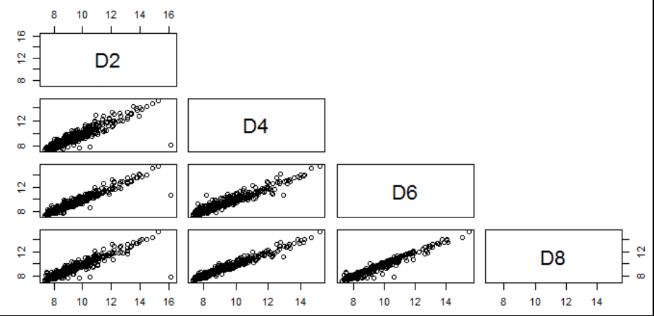
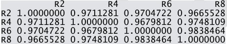
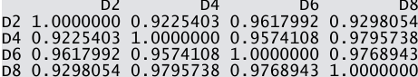
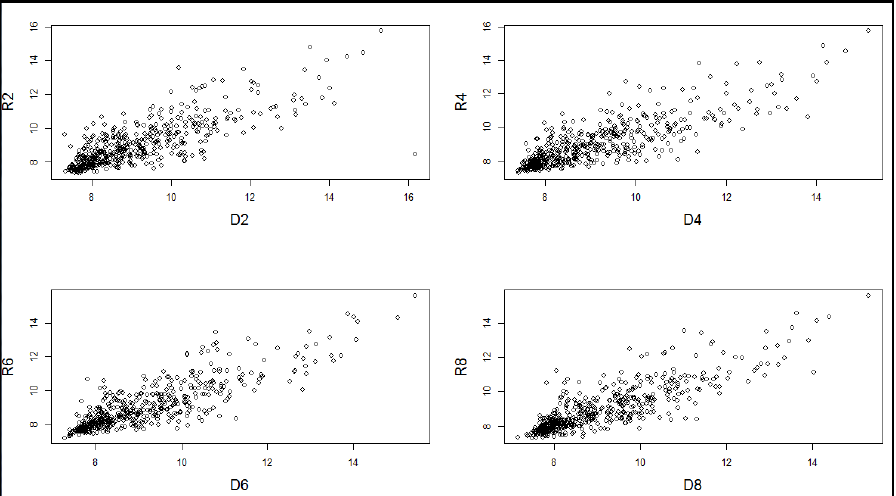
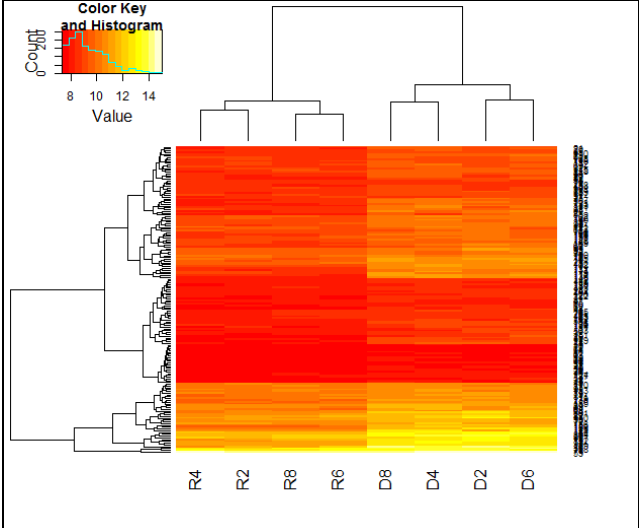

Copyright © 2017 BioSakshat, Inc. All rights reserved.
……………………………………………………………..
Gene Expression Data Analysis
Experimental setup
There are two varieties of plant xyz, one is resistant (R) to a fungal infection while other is susceptible to the fungal disease (D). The experiment was conducted to study the differential expression of 490 genes (G1, G2, G3,.., G490), which are involved in 3 different pathways (P1, P2 and P3).
The gene expression was measured in the two mentioned varieties of plants, R and D, on Day 2, Day 4, Day 6 and Day 8.
The gene expression values for variety R on these days are given as R2, R4, R6 and R8 and that for variety D are given as D2, D4, D6 and D8.
The gene expression data is stored in a file path.txt. The first 6 rows of the file are shown below.

Objective
Data exploration, visualization and analysis of gene expression data, in a given file, using R to find out those genes, which are differentially expressed on 3 or more days between two varieties, R and D.
Steps
- Import the file “path.txt” into R.
- What is the data structure of imported file?
- How many rows and columns are there?
- What are column names?
- Find out minimum, first quantile, median, third quantile, mean and maximum of expression values on each day. Store the result in a file.
- Visualization of gene expression on 2,4,6,8 days of D and R plants using boxplot.

.
- Visualization of pairwise correlation of gene expressions among R2, R4, R6 and R8.

.
- Visualization of pairwise correlation of gene expressions among D2, D4, D6 and D8.

.
- Calculate the pairwise correlation coefficient values among R2, R4, R6 and R8.

.
- Calculate the pairwise correlation coefficient values among D2, D4, D6 and D8.

.
- Draw a four panel plot depicting four scatterplots of R2 Vs D2, R4 Vs D4, R6 Vs D6 and R8 Vs D8.

.
- Filter those genes that are up-regulated in D variety on all days i.e. (D2-R2)>0; (D4-R4)>0; (D6-R6)>0 and (D8-R8)>0. Write the differential expression values of these filtered genes in a file, up.txt.
Ans: 172 genes.
.
- Count the pathway wise gene count for the genes, which are filtered in step 12.
Ans:
P1 P2 P3
106 43 23
.
- Plot the heatmap showing clustering of genes filtered in step 12. Save the heatmap image.

.
- You are provided with an annotation file, anno.txt, of all the genes containing information of gene name, description and accession number. Retrieve the annotations for genes filtered in step 12 from anno.txt file. Hint: Search “%in%” in help and try to understand from the given example.
.
- Group the genes as per their pathways. Arrange the values for each group according expression on D2. Write the arranged data in a file, Genes_arranged.txt.
Solution
- Import the file “path.txt” into R.
data=read.table("path.txt",header=T)
- What is the data structure of imported file?
str(data)
- How many rows and columns are there?
dim(data)
- What are column names?
colnames(data)
- Find out minimum, first quantile, median, third quantile, mean and maximum of expression values on each day. Store the result in a file.
summary(data)
- Visualization of gene expression on 2,4,6,8 days of D and R plants using boxplot.
boxplot(data[,2:9]);
- Visualization of pairwise correlation of gene expressions among R2, R4, R6 and R8.
pairs(data[,2:5],upper.panel=NULL)
- Visualization of pairwise correlation of gene expressions among D2, D4, D6 and D8.
pairs(data[,6:9],upper.panel=NULL)
- Calculate the pairwise correlation coefficient values among R2, R4, R6 and R8.
rcor=cor(data[,2:5])
- Calculate the pairwise correlation coefficient values among D2, D4, D6 and D8.
dcor=cor(data[,6:9])
- Draw a four panel plot depicting four scatterplots of R2 Vs D2, R4 Vs D4, R6 Vs D6 and R8 Vs D8.
par(mfrow=c(2,2))
plot(data$D2,data$R2,xlab="D2",ylab="R2",cex.lab=1.5);
plot(data$D4,data$R4,xlab="D4",ylab="R4",cex.lab=1.5);
plot(data$D6,data$R6,xlab="D6",ylab="R6",cex.lab=1.5);
plot(data$D8,data$R8,xlab="D8",ylab="R8",cex.lab=1.5);
- Filter those genes that are up-regulated in D variety on all days i.e. (D2-R2)>0; (D4-R4)>0; (D6-R6)>0 and (D8-R8)>0. Write the differential expression values of these filtered genes in a file, up.txt.
library(dplyr)
# Filter those genes which are up/down regulated in Diseased condition.
temp=mutate(data,diff2=D2-R2,diff4=D4-R4,diff6=D6-R6,diff8=D8-R8,diff2up=diff2>0,diff4up=diff4>0,diff6up=diff6>0,diff8up=diff8>0,totup=diff2up+diff4up+diff6up+diff8up);
head(temp)
up3=filter(temp,totup>3);
write.table(up3,file="up.txt",sep="\t",eol="\n",quote=F,row.names=F)
- Count the pathway wise gene count for the genes, which are filtered in step 12.
pathcount=table(up3$Path);
- Plot the heatmap showing clustering of genes filtered in step 12. Save the heatmap image.
library("gplots");
h=heatmap.2(as.matrix(up3[,2:9]),trace="none")
- You are provided with an annotation file, anno.txt, of all the genes containing information of gene name, description and accession number. Retrieve the annotations for genes filtered in step 12 from anno.txt file. Hint: Search “%in%” in help and try to understand from the given example.
annotation=read.table("anno.txt", sep="\t",header=T)
temp=annotation$Gene %in% up3$Gene
info=annotation[temp,]
16 Group the genes as per their pathways. Arrange the values for each group according expression on D2. Write the arranged data in a file, Genes_arranged.txt.
gengrp=group_by(up3, Path)
arr=arrange(gengrp,D2)
write.table(arr,"Genes_arranged.txt", sep="\t", quote = F)